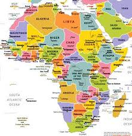

Africa
Africa, the second largest continent (after Asia), covering about one-fifth of the total land surface of Earth. The continent is bounded on the west by the Atlantic Ocean, on the north by the Mediterranean Sea, on the east by the Red Sea and the Indian Ocean, and on the south by the mingling waters of the Atlantic and Indian oceans.
African mineral resources
Africa contains an enormous wealth of mineral resources, including some of the world’s largest reserves of fossil fuels, metallic ores, and gems and precious metals. This richness is matched by a great diversity of biological resources that includes the intensely lush equatorial rainforests of Central Africa and the world-famous populations of wildlife of the eastern and southern portions of the continent. Although agriculture (primarily subsistence) still dominates the economies of many African countries, the exploitation of these resources became the most significant economic activity in Africa in the 20th century.
This article treats the physical and human geography of Africa, followed by discussion of geographic features of special interest. For discussion of individual countries of the continent, see such articles as Egypt, Madagascar, and Sudan. African regions are treated under the titles Central Africa, eastern Africa, North Africa, Southern Africa, and western Africa; these articles also contain the principal treatment of African historical and cultural development. For discussion of major cities of the continent, see such articles as Alexandria, Cairo, Cape Town, Johannesburg, and Kinshasa. Related topics are discussed in the articles literature, African; literature, South African; architecture, African; art, African; dance, African; music, African; theatre, African; art and architecture, Egyptian; Islam; arts, Islamic; and Islamic world.
© All rights are reserved.